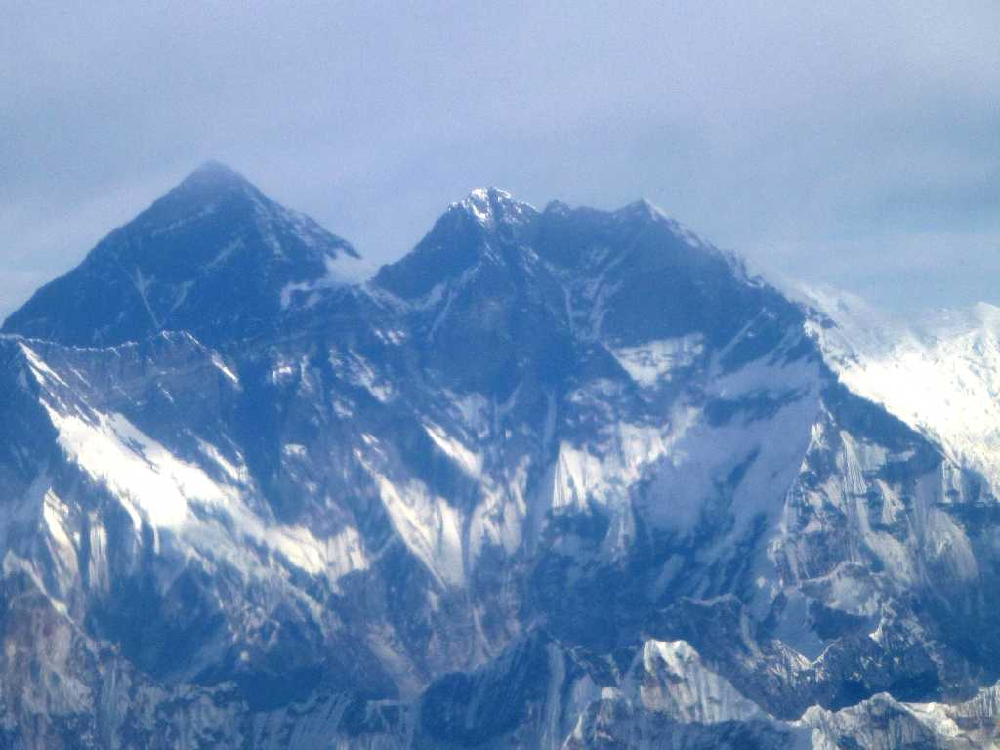
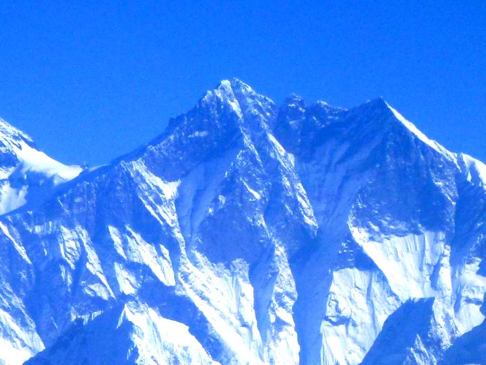
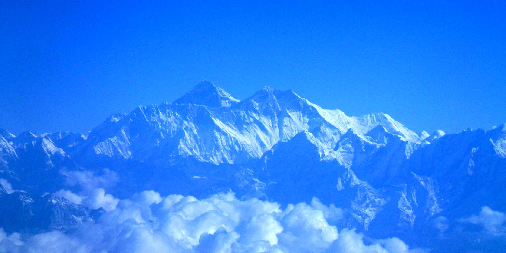

January 2 2013 Mt. Lhotse Mountain Flights
世界第四番目高峰 ８,５１６ｍ ローツェ山 左後方にエベレスト山がそびえているのでローツェはチベット語で南峰を意味する 初登頂１９５６年５月１８日スイス隊

October 28 2014 Mt. Lhotse Mountain Flights
約２年ぶりの再訪問で再度遊覧飛行へ 今回は出発時間が前回より遅く日差しが高く更に綺麗に観られた

October 28 2014 Mt. Everest Mt. Lhotse Mountain Flights